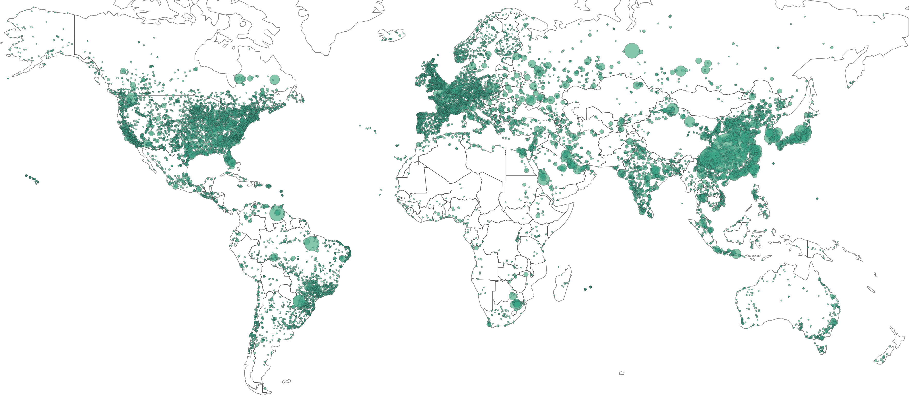
Preamble
In this third assignment, you will utilize the Class 3 Technical Lab as a guide to complete your third mapping project utilizing the WRI Global Power Plant Database.
The Class 3 Technical Lab and animated steps below should be used extensively to aid with the completion of the third assignment due Sunday evening (02/12/23) at 11:59pm.
The previous class 1 and 2 assignments featured the production of two maps - a small scale simple populated places global map and a large scale NYC 311 public service map. In a way, both maps are reference maps and simple thematic maps: they both have a theme but their primary purpose is simply to show the location of each theme noted below:
- Where are the locations of populated places?
- Where are the locations of 311 public service records in NYC based on one particular theme?
The Class 3 mapping assignment will build on the first two maps, but with significantly more emphasis on the thematic dimension of the mapped data - the distribution of global power generation across both type (nominal) and generation capacity in megawatts (quantitative). This week’s mapping will also focus on map layout adding in both a scale bar and an inset map element.
This Power Plant dataset format is .csv with lat/lon coordinates; we will rely on Class 2 fundamentals to import and initially map this dataset (XY Table > Feature Class). A polygon reference layer will be added - countries, states or regions - and proportional as well as categorical symbolization will be developed for the power plants. Finally, map layout elements - particularly a simple scale bar and inset map - will round out the assignment deliverable.
A synopsis of the assignment steps:
- Import data.
- Categorically symbolize data
- Proportionally symbolize data
- Develop and save categorical symbolization
- Create legend
- Create scale bar
- Create inset map
- Create other map elements - title & map author/source tag
- Finalize map layout design, export as PDF, PNG or TIFF and submit assignment to Canvas Class 3.
Data
The dataset utilized in this mapping will be the Global Power Plant Database v1.3.0 which is open and accessible at WRI.
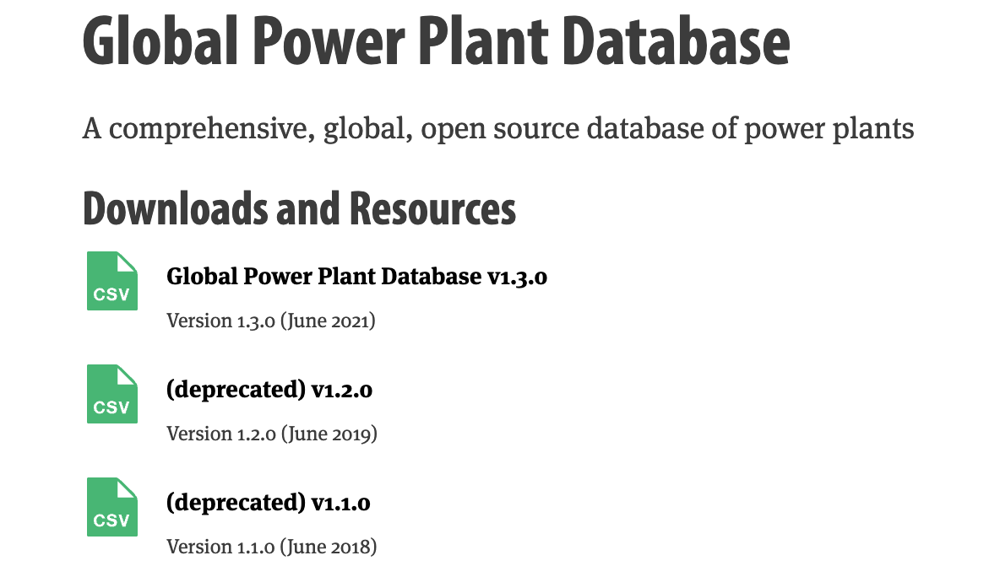
Make sure to review the metadata for dataset.
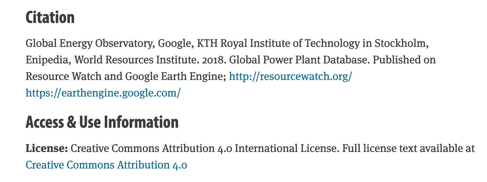
Utilize the Class 3 Starter Data.
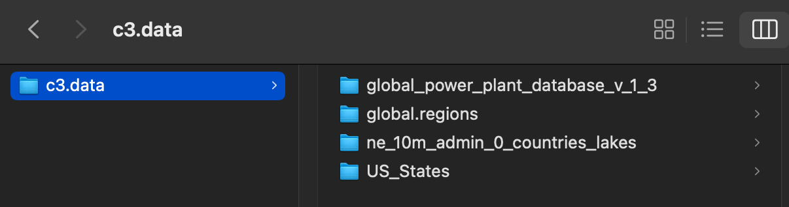
Remember the c3.data will be compressed as a zip directory; you need to first uncompress and place into your assignment folder that you create and connect the data via ArcCatalog for your assignment .mxd.
Assignment 3 Starter Data Directory:
global.regions= world boundary polygon featuring UN world regions schemane_10m_admin_0_countries_lakes= Natural Earth world countries polygon featureUS_States= US states boundaries clipped to shoreline polygon featureglobalpowerplantdatabasev1.3.0= WRI Global Power Plant Database in.csvformat.
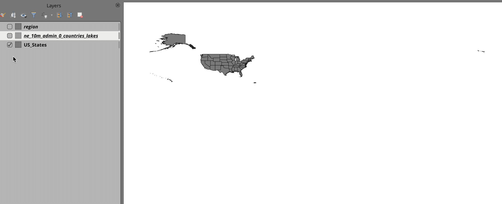
Class 3 Readings:
This week’s reading will be exclusively from Essentials of Geographic Information Systems textbook.
The Class 3 quiz (02/13/2023) will features 10 questions covering content in the textbook chapters 3 and 4 as noted below:
Essentials of Geographic Information Systems textbook - Chapter 3, pages 45 - 58 (Map Anatomy).
- Read the Coordinate System overview on pages 54-55, but do not continue with section the Map Projections section on pages 55-58. Rather, skip section Map Projections completely and resume with section 3.3 Map Abstraction.
Essentials of Geographic Information Systems textbook - Chapter 4, pages 63 - 85 (Cartographic Principles).
- Read from the beginning of the chapter through section 4.3 Map Design, but stop at section 4.4 Cartographic Data Classification.
Assignment Step 1
- Navigate to a directory folder that you make for assignment 3; create an assignment
.mxd, placing it within your assignment 3 directory. Establish an ArcCatalog connection to the assignment 3 folder - the location where you will place both the delimited text (.csv) and the various polygon features.
Assignment Step 2
- For demonstration purposes, the assignment guide and the technical lab will utilize the country of Ukraine as the project Area of Interest. To select an Area of Interest from 1 of the 3 geographic scale levels, first label the respective feature polygon layer as follows:
Right-click Feature Layer at Table of Contents (TOC) > Properties > Labels > Label Field
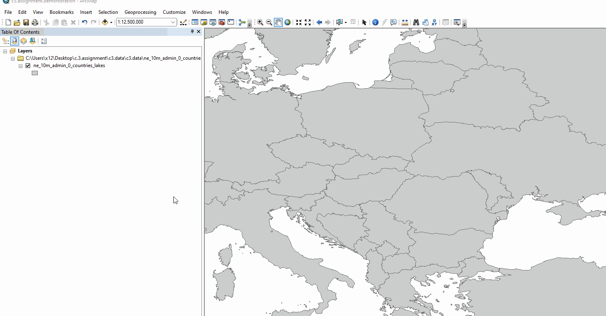
- With Labeling complete, consider altering the
Data Frame Properties- not individual layers - coordinate system to one that represents area better (Right-click Data Frame > Properites > Coordinate System). Below theNatural Earthprojected coordinate system is chosen. Notice how the polygon features are less elongated inNatural Earth:
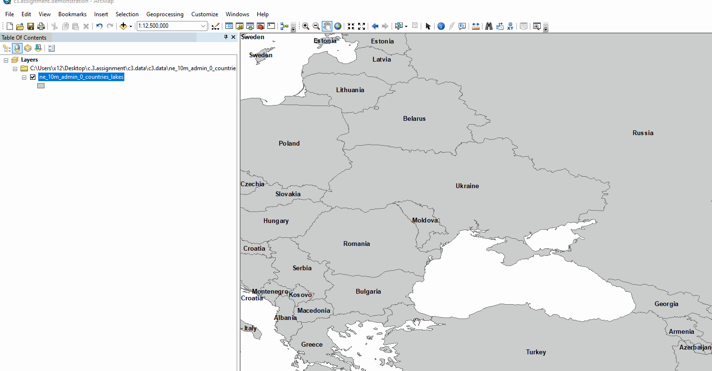
Assignment Step 3
Next, make a subset selection within the attribute table to select the feature - in this case Ukraine. Here will will make a simple SQL (Structured Query Language) declaration to select Ukraine (replace Ukraine with your choice of geography).
Once the selection is complete (cyan colored outline will appear on map for the selected feature(s)), export to a folder you make entitled
exportswithin your assignement 3 directory.
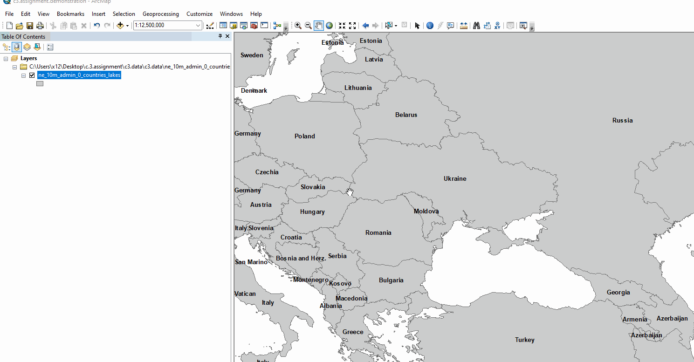
Assignment Step 4
- Next map your
XY Table > Feature ClassGlobal Power Plant Database as was done in Class 2 Technical Lab. Your results when mapped should be atop your chosen geographic features, i.e. Ukraine in this example:
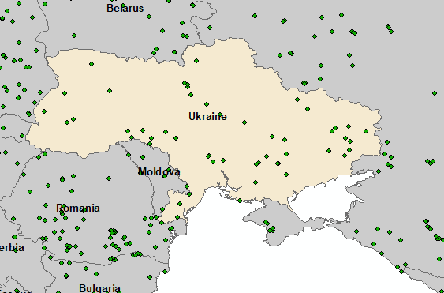
XY Table > Feature Class Global Power Plant Database- Once complete, proceed to
Select by Location, inputting the tool, and outputting the results correctly into theexportsfolder within your assignment directory:
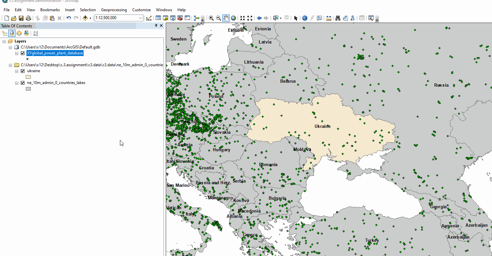
Select by LocationAssignment Step 5
- Remove the original Global Power Plant Feature Class from your TOC; create a spatial bookmark, centering your Data Frame to your geographic feature, i.e. Ukraine in the example. Save the project
.mxd:
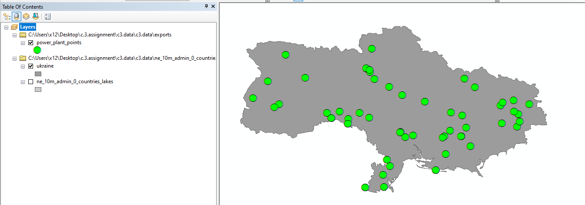
Assignment Step 6
Next symbolize the Power Plant Feature Points across two dimensions:
Categorical color for
Fuel TypeProportional size for
Power CapacityUtilize the
Multiple Attributestoolset underSymbologyto first apply categorical colors, then within the tool again applySymbol Sizeto the layer using the default 5 Class Natural Breaks Classification.
We will cover classification methods in Class 4 upcoming. In the meantime, stick with the default 5 Class Natural Breaks. Further, use this step to establish both the color that you want for the fuel type and the sizes of the points for relative power capacity. Save the .mxd when done.
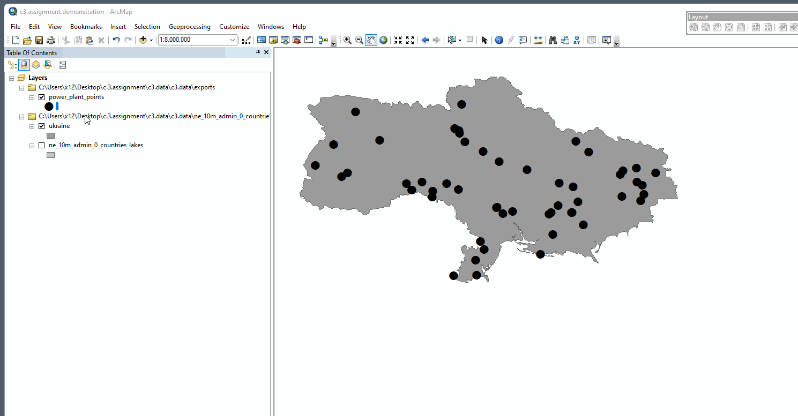
Multiple Attribute Symbology to the Power Plant Points within your geographic feature.Assignment Step 7
- While the appearance is now correct at the Data Frame, the current legend item in the TOC shows each fuel type separately as 5 size classes. This legend appearance can be revised further for a better final legend. Here we will keep the current layer in the TOC, but we will save each color style for each fuel in the mapping to the Styles Manager.
Increase the icon size and/or change the icon shape so that the legend item in the final layout is more prominent than the default point style. Further, apply transparency to the Multiple Attributes layer if you want to see overlapping points in your final mapping.
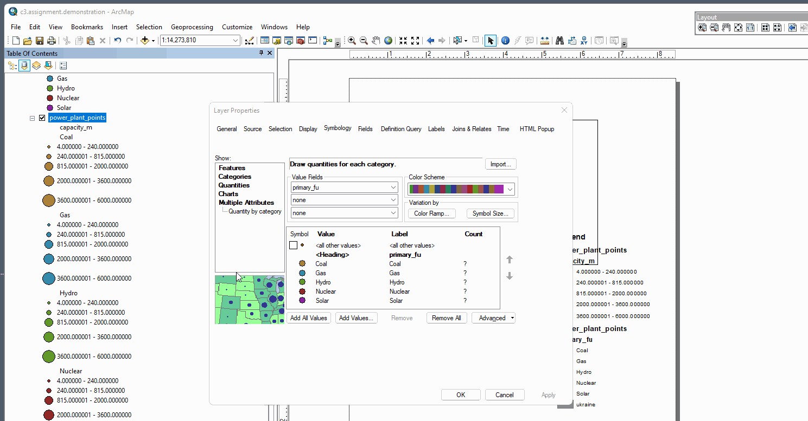
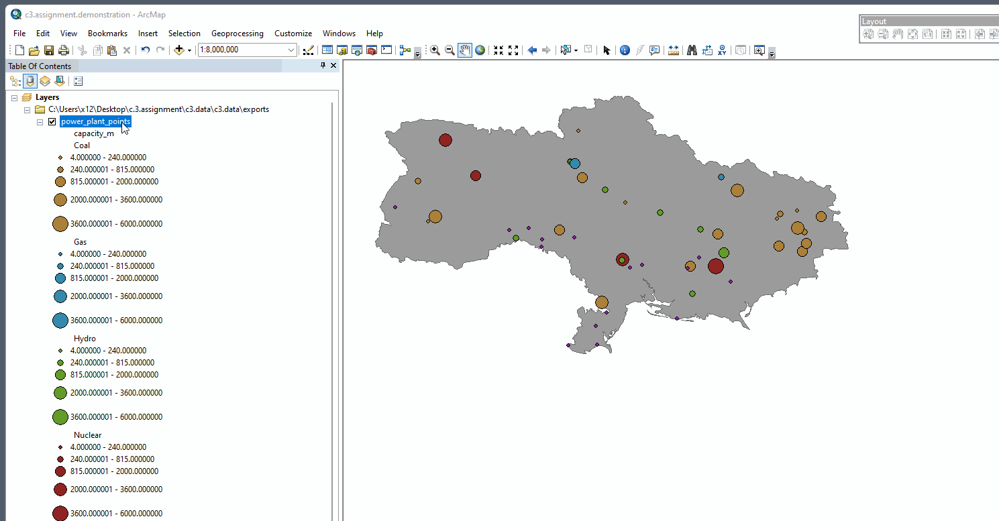
- Next, Tooggle OFF the primary layer and import a new instance of the layer and make additions from the Styles Manager:
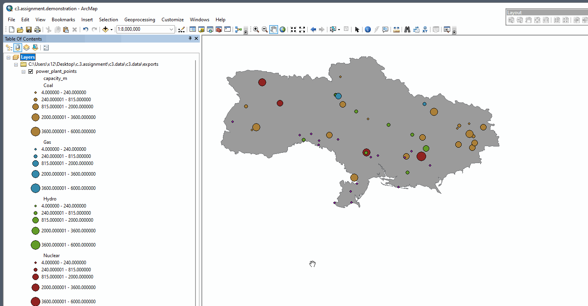
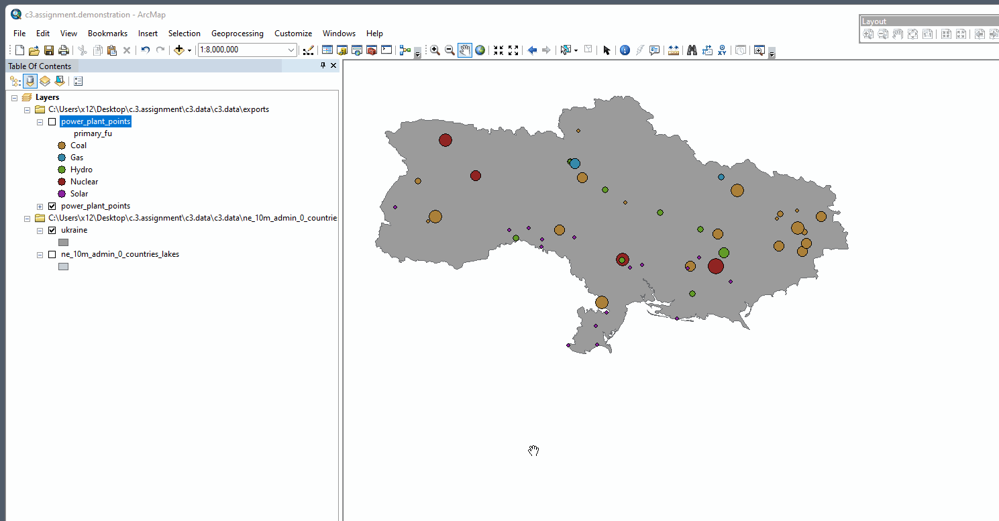
- Next, import another instance of the layer, and apply the proportional sizes to the layer, keeping only the symbol outline, not the default color. Make sure to continue to use 5 Class Natural Breaks as the method in order to match with the main map symbolization for Power Plant capacity size:
- Finally, detach the legend from the map items in the TOC by making the legend a graphics feature. This allows you to then Toogle OFF the symbolization layers in the TOC and allow the primary layer to be displayed in the map without complication from the overlapping symbolization layers:
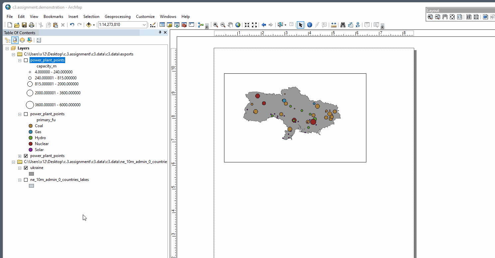
Note that once the Legend Item becomes a Graphics Feature, you cannot effectively edit the legend. Make sure to make all revisions to the legend prior to making it a Graphics Feature.
Assignment Step 8
Before proceeding to the scale bar creation and inset map, save the
.mxd.To create the scale bar, navigate to Items on the top menu bar and choose a bar style. Note that there are many parameters to scale bars that can be revised to get exactly the appearance and measurements that best suit your main map frame. We will have discussed these options in some depth during Class 3 Technical Lab:
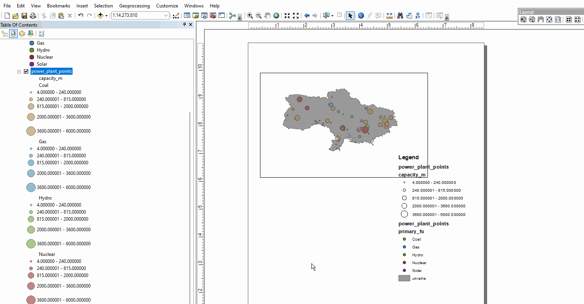
Assignment Step 9
Following the scale bar item, move to the inset map item. Here are two options to create this item.
- Create a Bounding Box Geometry for either the subset power plant data or the polygon feature that you are using as your map focus.
- Utilize the Extent Indicator function to create a polygon representation of the Main Map Data Frame.
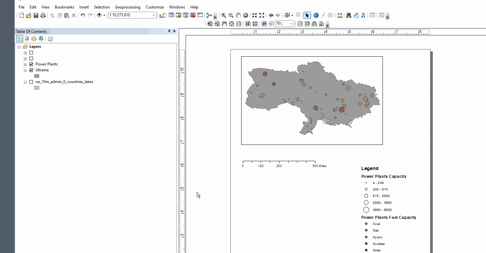
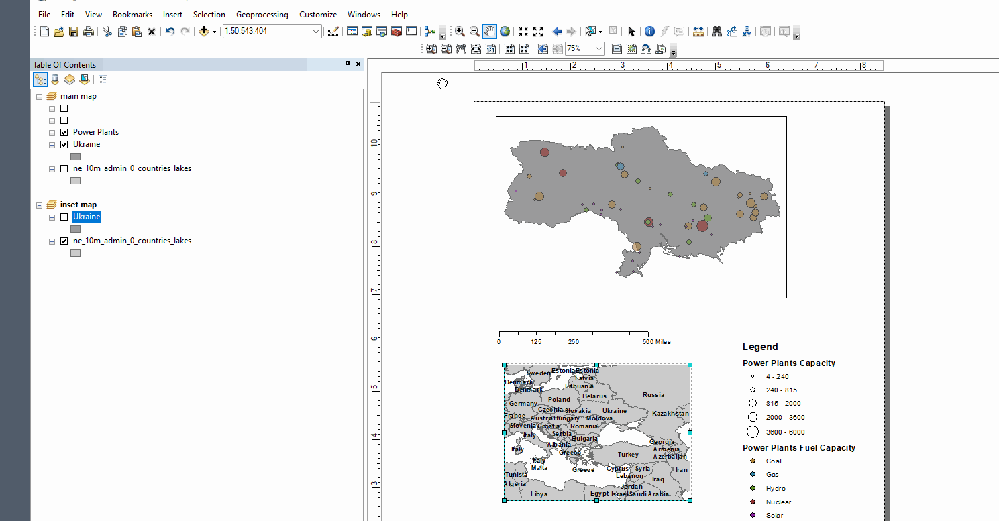
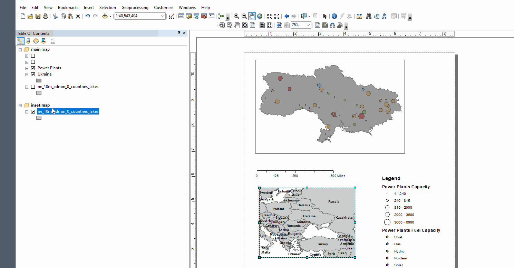
Map layout & Deliverable:
To development the final map design, utilize the diagram and map example PDFs below to help guide your process.
Final map layout will include the following elements on either a 11x17” or 8.5x11” Landscape 300 DPI:
Main map frame featuring a polygon selection (state, country or region) with symbolized power plant locations within the polygon boundary.
- A map title
- Legend representing both proportional (size) and categorical (color) symbolization for power plants
- Simple scale bar
- Inset map with extent locator
If a PDF export is exhibiting a large file size, .png or .tiff are acceptable.
- Utilize the following diagram and map example to strategize your own map layout design:
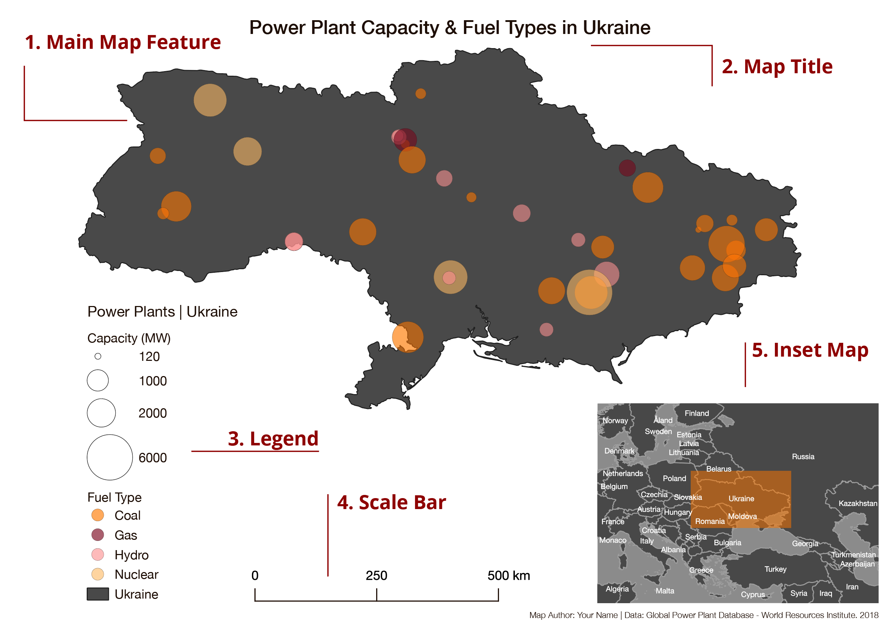
- Assignment 3 Deliverable Examples:
- Video Guide for Map Scale:
Concluding Remarks
Utilize the example maps above for the required map elements - main map, map title, author notation, legend, scale bar and map inset.
Upload your assignment.3.pdf to the CANVAS location for the second class assignment. Save the project directory with all project materials in a location you’ve set aside for completed assignments for the course.